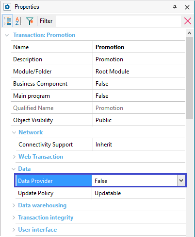
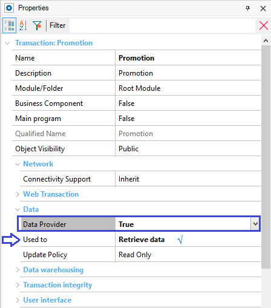

| False |
| True |
Objects: Transaction
This property is offered under the 'Data' properties group available for Transactions:

Default value: False.
When the Data Provider property value is set to True:
The previous Data Provider could be completed with fixed data or with attributes, to load all the available promotions.
2. The Used To property is added to the group, as shown below:

It is important to read about the Used to property because it works together with the Data Provider property, in order to implement the whole behavior.
This property applies only at design-time.
This property is available since GeneXus 15.